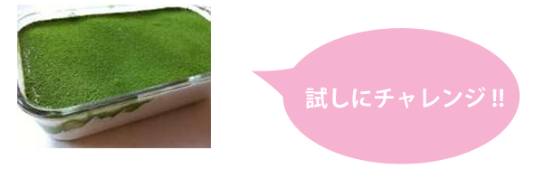

- 室温にもどしておいたクリームチーズをボウルに入れ、滑らかになるまでホイッパーで混ぜる。
- １に砂糖の半分を入れて混ぜ、卵黄を一個ずつ入れ混ぜ合わせる。
- 生クリームと残り半分の砂糖を別のボウルに入れ、8～9分立てにする。ツノがたつ程度。
- ２のボウルに３の生クリームを一杯ホイッパーですくって均等に混ぜ合わせてから、残りの生クリームをすべて混ぜ合わせる。
- ☆の材料を合わせてコーヒー液を作る。 ※自分の好みで苦さを調整してください。
- カステラの半分を敷きつめ(重なってもok)、上から５のコーヒー液の半分をスプーン等でかけ、染み込ませる。
- ６に４で作ったクリームを半分入れる。
- 工程６＆７をもう一度繰り返す。
- 型にラップをして1時間程冷蔵庫で生地をなじませたら、上から純ココアをふるいにかけて完成。
クリームチーズに卵黄を混ぜる時は、少しずつ混ぜた方が分離しません。コーヒー液は食べる人の好みで苦さを調整してください。コーヒーとココアではなく、抹茶に変えて作ってみるのもおすすめです。
